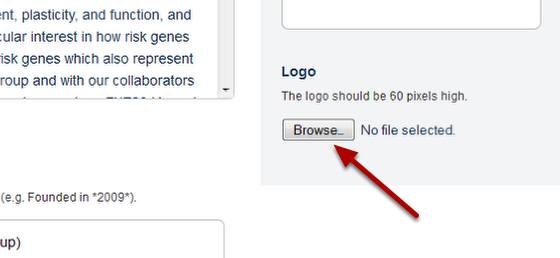
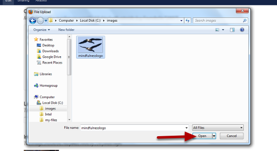

Add a Logo to a Research Group Page¶
Logos appear at the top of a Research Group page above the contact details. Logos should be 60 pixels high. This shows you how to add the logo below:
Group logos¶
Select Edit mode¶
Go to your Research Group page and click on Edit on the top tool bar.
Upload logo¶
Scroll down the page until you see the heading Logo on the left hand side of the page. Click on the Browse... button.
Find your image¶
Find your image on your computer and click on Open.